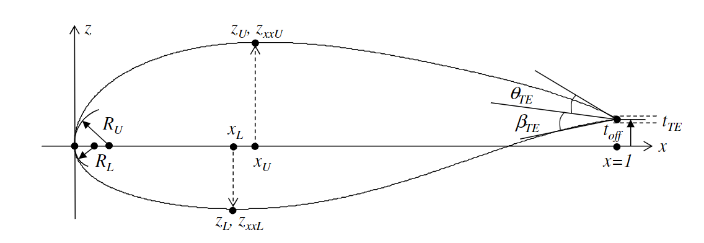

Parsec Airfoil Parametrization Method
Introduction
The PARSEC airfoil parameterization was developed by Sobieczky in 1998.
In the PARSEC method, the upper surface of the airfoil is described by a sixth order polynomial:
where \(a_{i}, i=1, \ldots, 6\), are the polynomial coefficients, and \(x\) is the nondimensional chordwise location, \(0 \leq x \leq 1\). The coefficients, shown in Fig. 7.4, are determined by six geometrical constraints.
Maximum upper surface \(z\)-coordinate \(z_{U}\) at \(x_{U}\), i.e.:
First order derivative is zero at \(x_{U}\), i.e.:
Prescribed second order derivative \(z_{x x U}\) at \(x_{U}\), i.e.:
Trailing edge (TE) off-set, \(t_{\text {off }}\), and thickness, \(t_{T E}\), i.e.:
TE direction angle, \(\theta_{T E}\), and wedge angle, \(\beta_{T E}\), i.e.:
Prescribed LE radius of upper surface, \(R_{U}\). A circle at \(\left(x_{c}, z_{c}\right)\) with a radius \(R_{U}\), and is defined as:
Below is a figure showing the geometrical constraints:
The LE of the airfoil is at the origin, so \(\left(x_{c}, z_{c}\right)=(0,0)\). We can write:
The upper surface polynomial can be written as:
Comparing the two above equations for small \(x\), we obtain:
which is the condition that has been met at the LE. The above geometrical constraints form a linear system of equations:
where:
The linear system has a unique solution given by:
The lower surface is configured in a similar fashion. We have:
with the following constraints:
The linear system of equations is:
where \(\mathrm{E}=\mathrm{P}\) and
The solution to the matrix equation is:
Altogether, there are 12 parameters in the PARSEC formulation. Some of the parameters can be fixed during an optimization. For example, setting \(t_{T E}=0\) will yield a sharp closed TE. Also, it is possible to work only on the upper or the lower surface.
PARSEC.py
This function is used to generate a PARSEC surface given a set of input parameters.
The input parameters to the PARSEC function are:
X: a 1-D list or array where
X=[x_U, z_U, z_xxU, R_U, x_L, z_L, z_xxL, R_L, theta_TE, beta_TE]N: an int that specifies the number of points to generate on the upper and lower surfaces
xdist: a 1-D numpy array of x-coordinates at which the upper and lower surfaces are evaluated. If this parameter is not provided, the points will be generated uniformly between 0 and 1.
The outputs of the PARSEC function are:
xu: a 1-D numpy array of the x-coordinates of the upper surface
zu: a 1-D numpy array of the z-coordinates of the upper surface
xl: a 1-D numpy array of the x-coordinates of the lower surface
zl: a 1-D numpy array of the z-coordinates of the lower surface
PARSEC_fit.py
This function is used to fit PARSEC parameters to a set of airfoil coordinates.
The input parameters to the PARSEC_fit function are:
xu: a 1-D numpy array of the x-coordinates of the upper surface of the target airfoil
zu: a 1-D numpy array of the z-coordinates of the upper surface of the target airfoil
xl: a 1-D numpy array of the x-coordinates of the lower surface of the target airfoil
zl: a 1-D numpy array of the z-coordinates of the lower surface of the target airfoil
The outputs of the PARSEC function are:
X: a 1-D list or array where
X=[x_U, z_U, z_xxU, R_U, x_L, z_L, z_xxL, R_L, theta_TE, beta_TE]
Example: Fitting a PARSEC surface to a RAE2822 and plotting the results
Here’s an example Python code snippet that uses the PARSEC_fit.py to fit a PARSEC surface to an RAE2822 airfoil:
# import packages
from readairfoil import *
from PARSEC_fit import *
import numpy as np
import matplotlib.pyplot as plt
from readairfoil import *
airfoil = 'rae2822' # airfoil .dat name
N = 100 # number of points describing each of the airfoil's upper and lower surfaces
xi = np.arange(N) # generate ascending integers from 0 to 0 to N-1
xdist = 1.0 - np.cos( xi* (np.pi)/2.0/(N - 1.0) ); # generating N-1 x values from 0 to 1 whose distribution follows the formula
xu,zu,xl,zl = readairfoil(airfoil,xdist=xdist) # load airfoil with the following distribution
X = PARSEC_fit(xu,zu,xl,zl,N,xdist) # fit PARSEC surface to airfoil
Below is the resulting plot: